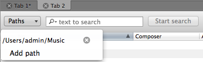

Search Files
If you want to search files in your Music folder by some pattern in file names or file tags, you can use the built-in search feature.
To enable it, press ⇧⌘F (or choose the menu item File → Search files). If the current tab is empty, the Search Bar shows in it, otherwise another tab will be opened with the Search Bar.
.
- Set up the search location(s). There is already one default location - your Music folder, but you can add as many other folders as you wish to perform search in them.
- Type the text to search, f.e.
Madonna(orPettersson, orconcerto). - Specify additional search options in the menu of the search field. By default search is case-insensitive and diacritics are also ignored.
- Click and wait for the search to finish. If you have found enough files or just tired of waiting, click .
All found files will be added to the current tab.
© 2009-2016 Alex Novichkov